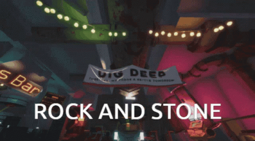
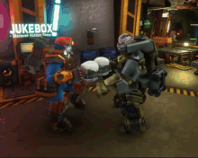

The Community of DRG is what this page is about, talking about jokes, actions, and general mindsets in the community, but mainly jokes.

In Game: DRG and it's community both have thier own jokes, pharases, and other things. We will first be talking about the most important phrase in DRG. The salute with it's own dedicated button, "Rock And Stone!". The salute or "Rock And Stone!" button has no use other than and won't affect the game in any way exept for that you can not fire your weapon while the animation is playing. The phrase has no true cohirent meaning, other than being positive. Some examples of when it can be used is after defeating a particularly dangerous or tough foe, when completing a mission, showing appreciasion, or completing an objective, and much more. One of the great things about the phrase is that it can mean anything positive, and is not tied to a specific situation.

Another important game mechanic is the Abyss bar area of the space rig/hub area. In the Abyss bar you can buy beer, play an arcade game, and dance via the jukebox. You unlock the two basic beers from simply playing the game for some time, and they only cost a few credits. Some beers though need a brewing licence to unlock, which takes brewing ingrediants from the caves, and need both ingrediants and credits to buy them afterwards. These beers have purley cosmetic effects, from setting you on fire, to teleporting you to space, to imideatly getting you to max drunkness. All but one of these beers can affect the player in missions, the randowiser, which will randomize your lodout and cosmetics. There is one more type of beer that can affect you in missions, the todays special, which depending on the beer, will give the player that drinks them positive effects that last for one mission. You need to buy a beer license to use the todays special beers, and that needs barley bulbs which an befound in the caves like the other ingrediants, barley bulbs also used to buy the today's special beers.
There are other small mechanics/details that the devs added, like the ability to pet certain friendly creatures in the caves, some dwarf voiclines being refrences to pop culture, and other things in the space rig.

Another things is the names given to diferent things in DRG. These names are from voice lines in game, and the community. There is the name for the M.U.L.E. "Molly", and "Bosco" for the A.P.D. (who acompanies you if you are in a solo mission, or there are no other players with you). The name of the best ally in DRG is "Steve", which is the name given to any gliphid grunt or gliphid grunt varient tamed by the beastmaster perk.
Community/out of game With the community, we will first be talking about one of the more imbeded jokes, Driller being a team killer/kills the scout. This joke has the driller using the large amounts of area damage of his satchel charge to one shot kill his team mates, with the target often being the scout. There is a simmilar team kill joke with the FatBoy overclock for the engineer's grenade launcher, which creates a small neuclear explosion when the grenade detonates.

Another community born thing is the "RICHual", and "Mushroom". Both come from the fact that the compresed gold (RICHual) and very specific mushroom play what is esentially a singly voiceline when pinged, both have players spam the ping on one of the said items. For the RICHual it's the voiceline "Were Rich!", and the mushroom is just "Mushroom". Spam pinging either item can result in a voiceline from an annoyed mission control, telling you to stop.